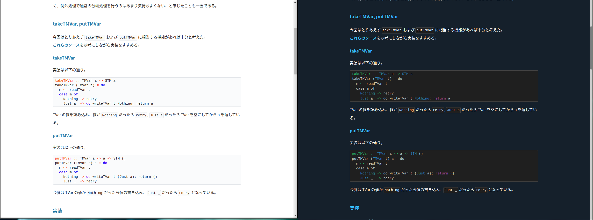

このブログをダークモード対応した
Posted on 2020-12-29
表題の通り、対応した。
ダークモード
最近だとGitHub がダークモードに対応したり、いろいろなアプリ、サービスもダークモードに対応してきたように感じている。
このブログもダークテーマが OS で選択されていたらダークモードになるようにした。
対応内容
基本的には @media (prefers-color-scheme: dark) のメディアクエリを使って対応した。
CSS のカスタムプロパティを使って、まとめて色だけ宣言できるようにした。
:root {
--background-color: #fff;
--color: #222;
--main-color: #237dac;
--link-active-color: #2d3e4a;
--menu-link-color: #555;
--menu-link-background-color: #eee;
--muted-color: #999;
--code-border-color: #e1e4e8;
--code-background-color: #fafbfc;
}
@media (prefers-color-scheme: dark) {
:root {
--background-color: rgb(21, 32, 43);
--color: #fff;
--main-color: #35b8ff;
--link-active-color: #8cb3d3;
--menu-link-color: #eee;
--menu-link-background-color: rgb(28, 44, 59);
--muted-color: #ddd;
--code-border-color: #444444;
--code-background-color: rgb(31, 31, 31);
}
}シンタックスハイライト部分は Skylightingというライブラリを使っており、細かい対応が面倒だったので、Hakyll でハイライト用の CSS を生成する際、メディアクエリつきの CSS を後ろにくっつけるようにした。
create ["css/highlight.css"] $ do
route idRoute
compile $ makeItem $ (compressCss $ SF.styleToCss SS.haddock) ++ "@media (prefers-color-scheme: dark) {" ++ (compressCss $ SF.styleToCss SS.breezeDark) ++ "}"結果
以下のようにメディアクエリに応じて見た目が切り替わるようになった。

GitHub のダークモードのようにブログ上で手動で切り替えられるようにはしていないが、それもそのうち対応したい。